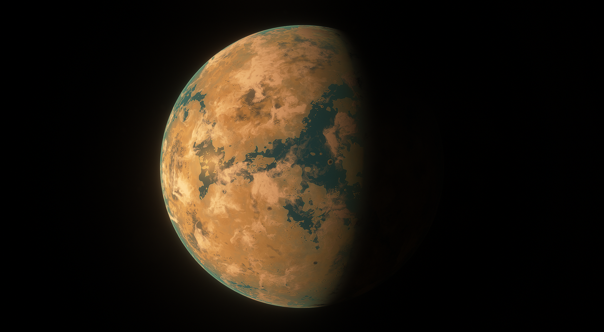
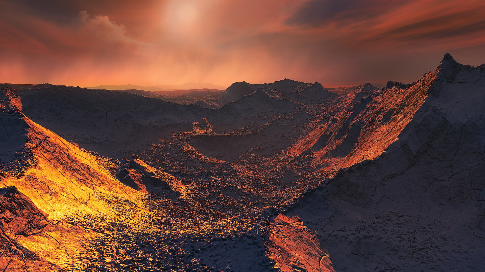

 Planet: Vishapakar / Barnard's Star b
Planet: Vishapakar / Barnard's Star b
 Distance from Sol: 5.87 Light Years
Distance from Sol: 5.87 Light Years
 Galaxy: Milky Way
Galaxy: Milky Way
 Constellation: Ophiuchus
Constellation: Ophiuchus
 Classification: Cool marine superterra
Classification: Cool marine superterra
 Goverment: Barnard Worker's Party | Communism
Goverment: Barnard Worker's Party | Communism
 Characteristics:
Characteristics:
Mass - 3.1115 Terran
Radius - 1.7975 TerraDiameter
Solar Day - 11.49 Hours
Orbital Period - 232 TerraMol
Gravity - 0.96301g
Atm pressure - 1.498 atm
Atmosphere Comp: N2, CO2
Description:
Vishapakar, translating to Dragon Stone, is the renamed exoplanet orbiting Barnard's Star, specifically identified as Barnard's Star b. This celestial body evolved into a thriving settlement following the arrival of an expedition aboard the Kepler-class interstellar cruiser model 2.
Vishapakar, despite its name's association with Armenian dragon mythology, presents a starkly contrasting reality as a desert planet shrouded in expansive oceans of saline water. The paradox of its arid surface overlaying substantial saltwater bodies renders the planet habitable in a unique manner. Settlers on Vishapakar have ingeniously adapted to this environment, constructing protective domes and structures to establish thriving communities shielded from the planet's harsh external conditions. Within these artificial habitats, life flourishes, creating a harmonious coexistence between the inhabitants and the desert landscape that defines Vishapakar's intriguing and distinctive character.
